# Convertir les variables numériques
df$Age <- as.numeric(df$Age)
class(df$Age)Stats Thèse Brieuc
NoteOrigine de ce document
Ce document est au format Quarto Markdown (.qmd) : il contient du code R et est généré directement pour obtenir un rapport en PDF ou HTML.
Il est donc à la fois un document de travail pour moi, et à la fois un document de présentation des analyses. Je laisse donc volontairement les sections de code pour transparence et reproductibilité des analyses.
La préparation des données a été faite sur R plutôt que sur Excel pour éviter les erreurs et tracer les étapes. La première partie du document est donc consacrée à la préparation des données, avec des sections de code pour chaque variable (vous pouvez donc sauter les sections de code si vous ne souhaitez pas les détails de la préparation des données).
Je suis interne en chirurgie digestive à Paris et actuellement un master 2 en biostatistiques (“Méthodologie et Statistiques en Recherche biomédicale”, Université Paris Saclay). Et accessoirement, ami de Brieuc !
Le rapport est disponible en format HTML hébergé sur Github Pages, et aussi téléchargeable en PDF, DOCX et Quarto (.qmd), contenant le code R utilisé pour les analyses.
1 Import de la base et préparation des données
1.1 Dates
1.2 Variables numériques
1.3 Variables catégorielles
1.3.1 Sexe
# Convertir la variable "Sexe" en facteur
df$Sexe <- factor(c(M = "Masculin", F = "Féminin")[df$Sexe], levels = c("Masculin", "Féminin"))
table(df$Sexe, useNA = "ifany")1.3.2 Côté
# Convertir la variable "Côté" en facteur
df$Cote <- factor(
c(G = "Gauche", D = "Droite")[df$Cote],
levels = c("Gauche", "Droite")
)
table(df$Cote, useNA = "ifany")1.3.3 Niveau
# Convertir la variable "Niveau" en facteur ordonné
df$Niveau
df$Niveau <- factor(
df$Niveau,
levels = c("C4", "C5", "C6", "C7", "C8"),
ordered = TRUE
)
table(df$Niveau, useNA = "ifany")1.3.4 Examen clinique
str(df$Examen_Clinique)
class(df$Examen_Clinique)
unique(df$Examen_Clinique)
#création d'une variable binaire "Examen_Clinique_Binaire" (1 = Positif, 0 = Negatif ou Douteux)
df$Examen_Clinique_Positif_YN <- ifelse(df$Examen_Clinique == "Positif", 1, 0)
table(df$Examen_Clinique_Positif_YN, useNA = "ifany")
#création d'une variable binaire "Examen_Clinique_Douteux_YN" (1 = Douteux, 0 = Positif ou Negatif)
df$Examen_Clinique_Douteux_YN <- ifelse(df$Examen_Clinique == "Douteux", 1, 0)
table(df$Examen_Clinique_Douteux_YN, useNA = "ifany")1.3.5 IRM
str(df$IRM)
class(df$IRM)
unique(df$IRM)
#création d'une variable binaire "IRM_Positif_YN" (1 = Positif, 0 = Negatif ou Douteux)
df$IRM_Positif_YN <- ifelse(df$IRM == "Positif", 1, 0)
table(df$IRM_Positif_YN, useNA = "ifany")
#création d'une variable binaire "IRM_Douteux_YN" (1 = Douteux, 0 = Positif ou Negatif)
df$IRM_Douteux_YN <- ifelse(df$IRM == "Douteux", 1, 0)
table(df$IRM_Douteux_YN, useNA = "ifany")1.3.6 Infiltrations
str(df$Infiltrations)
class(df$Infiltrations)
unique(df$Infiltrations)
#modification infiltrations pour mettre 1 et 0
df$Infiltrations <- ifelse(df$Infiltrations == "oui", 1, ifelse(df$Infiltrations == "non", 0, NA))
table(df$Infiltrations, useNA = "ifany")1.3.7 Gold Standard
#création d'une variable binaire "Gold_Standard_Positif_YN" (1 = Positif, 0 = Negatif ou Douteux ou NA)
df$Gold_Standard_Positif_YN <- ifelse(df$Gold_Standard == "Positif", 1,
ifelse(df$Gold_Standard %in% c("Negatif", "Douteux"), 0, NA)
)
table(df$Gold_Standard_Positif_YN, useNA = "ifany")
#création d'une variable binaire "Gold_Standard_Douteux_YN" (1 = Douteux, 0 = Positif ou Negatif ou NA)
df$Gold_Standard_Douteux_YN <- ifelse(df$Gold_Standard == "Douteux", 1,
ifelse(df$Gold_Standard %in% c("Positif", "Negatif"), 0, NA)
)
table(df$Gold_Standard_Douteux_YN, useNA = "ifany")1.3.8 Tests cliniques évaluateur 1
Les variables sont transformées en numériques binaires (1 = Positif / 0 = Negatif) pour faciliter les tests.
1.3.8.1 U1_E1
str(df$U1_E1)
class(df$U1_E1)
table(df$U1_E1, useNA = "ifany")
#création d'une variable binaire "U1_E1_Positif_YN" (1 = Positif, 0 = Negatif ou NA)
df$U1_E1_positif <- as.numeric(df$U1_E1 == "Positif")
table(df$U1_E1_positif, useNA = "ifany")1.3.8.2 U2a_E1
str(df$U2a_E1)
class(df$U2a_E1)
table(df$U2a_E1, useNA = "ifany")
#création d'une variable binaire "U2a_E1_Positif_YN" (1 = Positif, 0 = Negatif ou NA)
df$U2a_E1_positif <- as.numeric(df$U2a_E1 == "Positif")
table(df$U2a_E1_positif, useNA = "ifany")1.3.8.3 U2b_E1
str(df$U2b_E1)
class(df$U2b_E1)
table(df$U2b_E1, useNA = "ifany")
#création d'une variable binaire "U2b_E1_Positif_YN" (1 = Positif, 0 = Negatif ou NA)
df$U2b_E1_positif <- as.numeric(df$U2b_E1 == "Positif")
table(df$U2b_E1_positif, useNA = "ifany")1.3.8.4 U3_E1
str(df$U3_E1)
class(df$U3_E1)
table(df$U3_E1, useNA = "ifany")
#création d'une variable binaire "U3_E1_Positif_YN" (1 = Positif, 0 = Negatif ou NA)
df$U3_E1_positif <- as.numeric(df$U3_E1 == "Positif")
table(df$U3_E1_positif, useNA = "ifany")1.3.8.5 Sc_E1
Il existe un “NT” dans Sc_E1, traité comme NA
str(df$Sc_E1)
class(df$Sc_E1)
table(df$Sc_E1, useNA = "ifany")
# conversion de "NT" en NA
df$Sc_E1 <- ifelse(df$Sc_E1 == "NT", NA, df$Sc_E1)
table(df$Sc_E1, useNA = "ifany")
#création d'une variable binaire "Sc_E1_Positif_YN" (1 = Positif, 0 = Negatif ou NA)
df$Sc_E1_positif <- as.numeric(df$Sc_E1 == "Positif")
table(df$Sc_E1_positif, useNA = "ifany")1.3.8.6 Gachette évaluateur 1
Renommage de la variable “Gachette” en “Gachette_E1” pour plus de clarté
# Renommage de la variable "Gachette" en "Gachette1"
names(df)[names(df) == "Gachette"] <- "Gachette1"
table(df$Gachette1, useNA = "ifany")
# transformation de la variable en factoriel non ordonné
df$Gachette1 <- factor(df$Gachette1, levels = c("paraspinal", "susclavier"))
table(df$Gachette1, useNA = "ifany")
class(df$Gachette1)1.3.8.7 Tests cliniques évaluateur 2
1.3.8.8 U1_E2
str(df$U1_E2)
class(df$U1_E2)
table(df$U1_E2, useNA = "ifany")
#transformation NT en NA
df$U1_E2 <- ifelse(df$U1_E2 == "NT", NA, df$U1_E2)
table(df$U1_E2, useNA = "ifany")
#création d'une variable binaire "U1_E2_Positif_YN" (1 = Positif, 0 = Negatif ou NA)
df$U1_E2_positif <- as.numeric(df$U1_E2 == "Positif")
table(df$U1_E2_positif, useNA = "ifany")1.3.8.9 U2a_E2
str(df$U2a_E2)
class(df$U2a_E2)
table(df$U2a_E2, useNA = "ifany")
#transformation NT en NA
df$U2a_E2 <- ifelse(df$U2a_E2 == "NT", NA, df$U2a_E2)
table(df$U2a_E2, useNA = "ifany")
#création d'une variable binaire "U2a_E2_Positif_YN" (1 = Positif, 0 = Negatif ou NA)
df$U2a_E2_positif <- as.numeric(df$U2a_E2 == "Positif")
table(df$U2a_E2_positif, useNA = "ifany")1.3.8.10 U2b_E2
str(df$U2b_E2)
class(df$U2b_E2)
table(df$U2b_E2, useNA = "ifany")
#transformation NT en NA
df$U2b_E2 <- ifelse(df$U2b_E2 == "NT", NA, df$U2b_E2)
table(df$U2b_E2, useNA = "ifany")
#création d'une variable binaire "U2b_E2_Positif_YN" (1 = Positif, 0 = Negatif ou NA)
df$U2b_E2_positif <- as.numeric(df$U2b_E2 == "Positif")
table(df$U2b_E2_positif, useNA = "ifany")1.3.8.11 U3_E2
str(df$U3_E2)
class(df$U3_E2)
table(df$U3_E2, useNA = "ifany")
#transformation NT en NA
df$U3_E2 <- ifelse(df$U3_E2 == "NT", NA, df$U3_E2)
table(df$U3_E2, useNA = "ifany")
#création d'une variable binaire "U3_E2_Positif_YN" (1 = Positif, 0 = Negatif ou NA)
df$U3_E2_positif <- as.numeric(df$U3_E2 == "Positif")
table(df$U3_E2_positif, useNA = "ifany")1.3.8.12 Sc_E2
str(df$Sc_E2)
class(df$Sc_E2)
table(df$Sc_E2, useNA = "ifany")
#transformation NT en NA
df$Sc_E2 <- ifelse(df$Sc_E2 == "NT", NA, df$Sc_E2)
table(df$Sc_E2, useNA = "ifany")
#création d'une variable binaire "Sc_E2_Positif_YN" (1 = Positif, 0 = Negatif ou NA)
df$Sc_E2_positif <- as.numeric(df$Sc_E2 == "Positif")
table(df$Sc_E2_positif, useNA = "ifany")2 Introduction
4 tests ULNT (Upper Limb Neurodynamic Tests) : ULNT1, ULNT2a, ULNT2b, ULNT3
Qu’il faut comparer à deux gold standards :
Gold standard 1 : diagnostic d’une névralgie cervico-brachiale par examen clinique + IRM et consensus entre 2 orthopédistes seniors
Gold standard 2 : diagnostic d’une névralgie cervico-brachiale par examen clinique + IRM par un orthopédiste senior + résultat positif à une infiltration et/ou geste chirurgical
Objectif : Évaluation de la performance diagnostique, par rapport au gold standard, des ULNT et du Scratch Collapse Test pour le le diagnostic des névralgies cervicobrachiales en consultation de chir ortho.
3 Justification de l’effectif
Dans le protocole, un calcul de taille d’échantillon centré sur la précision de la spécificité par intervalle de confiance exact de Clopper-Pearson est fourni (= intervalle de confiance calculé en utilisant la distribution binomiale, plutôt que la distribution normale classique ; permet d’obtenir des intervalles de confiance plus précis, notamment pour les proportions proches de 0 ou de 1, ou pour les petits échantillons).
D’abord, il ne s’agit pas d’un calcul de puissance classique comme pour un test d’hypothèse : ici, l’objectif est que les tests soient performants pour éliminer une NCB chez les patients qui n’en ont pas.
Il s’agit de
fixer une spécificité cible
tà atteindre, par exemple0,85ou0,90(c’est à dire que le test doit être négatif chez au moins 85% ou 90% des patients qui n’ont pas de NCB)fixer une marge inférieure acceptable
ω, définie comme l’écart maximal tolérée entre cette spécificité cible et la limite inférieure de l’intervalle de confiance à 95% : par exemple, sit = 0,85etω = 0,15, alors la limite inférieure de l’intervalle de confiance doit être au moins égale à0,70(c’est à dire que même dans le pire des cas, la spécificité du test ne serait pas inférieure à 70%). C’est la marge de sécurité vers le bas.calculer ainsi le plus petit nombre de sujets négatifs permettant de respecter cette contrainte, puis convertir ce nombre en effectif total selon la prévalence attendue de la NCB dans la population étudiée
L’effectif total requis est calculé ainsi :
\[ N_{total} = \frac{{N_{negatifs}}}{1 - p} \]
(donc si la prévalence attendue est élevée, la proportion de patients négatifs est faible, et il faut inclure plus de patients pour avoir suffisamment de patients négatifs).
Le protocole du CHU de Rennes prévoit 11 protocoles en faisant varier les spécificités cibles (85% ou 90%), les marges de sécurité (O.099 ou 0.149) et les prévalences attendues (50%, 60% ou 75%).
Pour des raisons de validité de la méthode présentée ici, on recalcule manuellement tous les scénarios prévus par le protocole
sample_size_scenarios# A tibble: 11 × 8
S Sp_cible p Largeur_IC N_neg_requis N_tot_requis Borne_inferieure
<chr> <dbl> <dbl> <dbl> <int> <dbl> <dbl>
1 S1 0.9 0.75 0.099 50 200 0.801
2 S2 0.9 0.5 0.099 50 100 0.801
3 S3 0.9 0.75 0.149 27 108 0.751
4 S4 0.9 0.5 0.149 27 54 0.751
5 S5 0.9 0.6 0.099 50 125 0.801
6 S6 0.9 0.6 0.149 27 68 0.751
7 S7 0.85 0.75 0.099 59 236 0.752
8 S8 0.85 0.5 0.099 59 118 0.752
9 S9 0.85 0.75 0.149 31 124 0.704
10 S10 0.85 0.6 0.099 59 148 0.752
11 S11 0.85 0.5 0.149 31 62 0.704
# ℹ 1 more variable: Largeur_calculee <dbl>sample_size_table| Scenario | Target Sp | Prevalence | CI width | Required negatives | Required total N | Lower bound | Computed width |
|---|---|---|---|---|---|---|---|
| S1 | 0.90 | 0.75 | 0.099 | 50 | 200 | 0.801 | 0.099 |
| S2 | 0.90 | 0.50 | 0.099 | 50 | 100 | 0.801 | 0.099 |
| S3 | 0.90 | 0.75 | 0.149 | 27 | 108 | 0.751 | 0.149 |
| S4 | 0.90 | 0.50 | 0.149 | 27 | 54 | 0.751 | 0.149 |
| S5 | 0.90 | 0.60 | 0.099 | 50 | 125 | 0.801 | 0.099 |
| S6 | 0.90 | 0.60 | 0.149 | 27 | 68 | 0.751 | 0.149 |
| S7 | 0.85 | 0.75 | 0.099 | 59 | 236 | 0.752 | 0.098 |
| S8 | 0.85 | 0.50 | 0.099 | 59 | 118 | 0.752 | 0.098 |
| S9 | 0.85 | 0.75 | 0.149 | 31 | 124 | 0.704 | 0.146 |
| S10 | 0.85 | 0.60 | 0.099 | 59 | 148 | 0.752 | 0.098 |
| S11 | 0.85 | 0.50 | 0.149 | 31 | 62 | 0.704 | 0.146 |
4 Résultats des tests pris individuellement
4.1 Caractéristiques initiales de la population
- Variables disponibles : Âge (
df$Age), Sexe (df$Sexe), Côté (df$Cote), Niveau (df$Niveau)
4.1.1 Âge
resume_age_table| Min. | 1st Qu. | Median | Mean | 3rd Qu. | Max. |
|---|---|---|---|---|---|
| 27 | 42.75 | 51 | 51.27778 | 57.75 | 76 |
Un patient a 125 ans.
Pour l’instant, la médiane de la population lui est attribuée.
Représentation de la variable âge après correction par histogramme avec densité et QQ-plot (le QQ plot se construit en comparant les quantiles de la variable âge à ceux d’une distribution normale théorique : si les points suivent une ligne droite, la variable suit une distribution normale).
plot_age_distribution()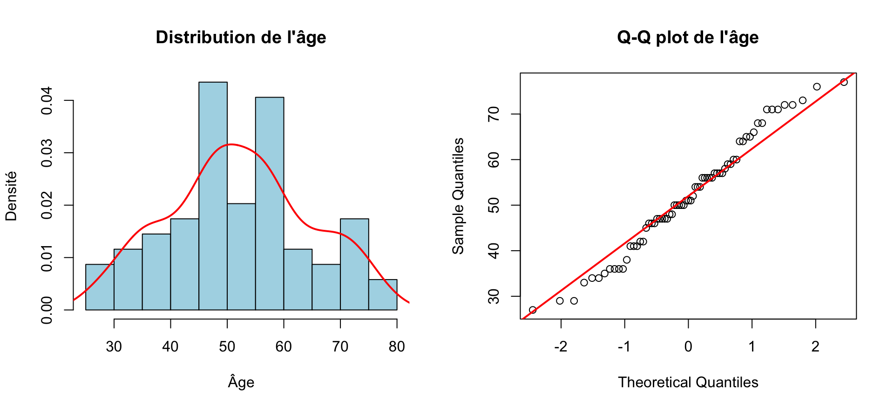
- L’âge semble suivre une distribution approximativement normale. Les tests statistiques de normalité (type Shapiro-Wilk) n’ont pas d’intérêt dans cette situation (permet uniquement de rejeter l’hypothèse de normalité si les données s’en écartent assez pour que le test ait la puissance nécessaire, or il n’y aura pas la puissance nécessaire avec seulement 50 patients).
4.1.2 Sexe
- Représentation de la variable sexe par un diagramme en barres et par un camembert (pie chart)
plot_sexe_distribution()
- Même si le camembert est plus visuel, le diagramme en barres est plus précis pour comparer les effectifs et les proportions (car affiche les effectifs totaux).
4.1.2.1 Côté
- Représentation de la variable côté par un diagramme en barres et par un camembert (pie chart)
plot_cote_distribution()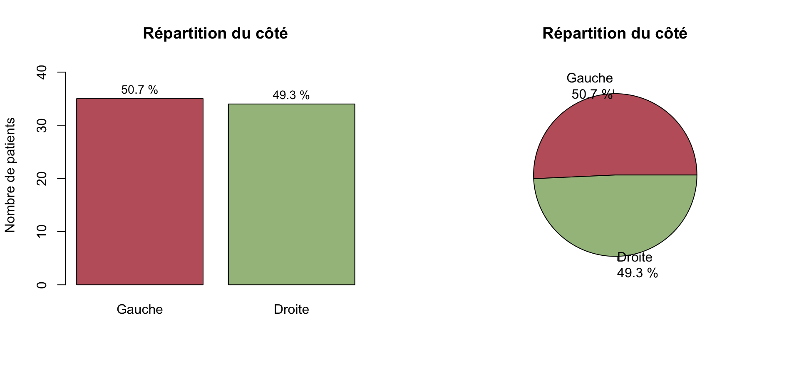
4.1.2.2 Niveau
- Représentation de la variable niveau par un diagramme en barres et par un camembert (pie chart)
plot_niveau_distribution()
4.1.2.3 Tableau de caractéristiques initiales
baseline_tbl| Caractéristiques | N = 541 |
|---|---|
| Age | 51 (42, 58) |
| Sexe | |
| Masculin | 19 (35%) |
| Féminin | 35 (65%) |
| Cote | |
| Gauche | 25 (54%) |
| Droite | 21 (46%) |
| Niveau | |
| C4 | 1 (4.2%) |
| C5 | 1 (4.2%) |
| C6 | 13 (54%) |
| C7 | 1 (4.2%) |
| C8 | 8 (33%) |
| Gold_Standard | |
| Douteux | 3 (5.6%) |
| Negatif | 14 (26%) |
| Positif | 37 (69%) |
| U1_E1 | |
| Negatif | 14 (26%) |
| Positif | 40 (74%) |
| U2a_E1 | |
| Negatif | 16 (30%) |
| Positif | 38 (70%) |
| U2b_E1 | |
| Negatif | 19 (35%) |
| Positif | 35 (65%) |
| U3_E1 | |
| Negatif | 33 (61%) |
| Positif | 21 (39%) |
| 1 Median (Q1, Q3); n (%) | |
Échantillon total comprend 54 patients.
Gold standard
positif dans 37 cas (soit 68.5 %).
douteux dans 3 cas (soit 5.6 %).
négatif dans 17 cas (soit 31.5 %).
Le premier point posé ici est la gestion des
Douteux: ils sont d’abord tous reclassés comme négatifs, puis une analyse de sensibilité est réalisée en les reclassant comme positifs, pour évaluer l’impact de ce choix sur les résultats.
4.2 Résultat des tests cliniques (test par test)
La première partie de l’analyse est centrée sur les tests cliniques de l’évaluateur 1
Elle évalue les performances “tests par tests”
Une seconde partie aggrège résultats et graphiques pour une comparaison globale des tests
4.2.1 ULNT1
- Résumé de la variable U1_E1
4.2.1.1 Tableaux récapitulatifs complémentaires
4.2.1.2 Tableau descriptif des résultats des tests
kable(
u1_descriptive,
caption = "Tableau descriptif des résultats de U1 (évaluateur 1)",
align = "c",
col.names = c("Test", "Positif n (%)", "Négatif n (%)", "Manquant n (%)")
)| Test | Positif n (%) | Négatif n (%) | Manquant n (%) |
|---|---|---|---|
| U1 | 40 (74.1%) | 14 (25.9%) | 0 (0%) |
4.2.1.3 Tableau de contingence avec le gold standard
kable(
u1_contingency,
caption = "Tableau de contingence de U1 par rapport au gold standard, avec effectifs et pourcentages sur l'ensemble des patients analysés",
align = "c"
)| U1 | G+ | G- | Total |
|---|---|---|---|
| T+ | 31 (57.4%) | 9 (16.7%) | 40 (74.1%) |
| T- | 6 (11.1%) | 8 (14.8%) | 14 (25.9%) |
| Total | 37 (68.5%) | 17 (31.5%) | 54 (100%) |
- T+/T- correspond à Test positif ou négatif, G+/G- correspond à Gold standard positif ou négatif.
4.2.1.4 Tableau des effectifs diagnostiques
kable(
u1_effectifs,
caption = "Effectifs diagnostiques de U1 par rapport au gold standard",
align = "c"
)| Test | N | VP | FN | FP | VN |
|---|---|---|---|---|---|
| U1 | 54 | 31 | 6 | 9 | 8 |
4.2.1.5 Tableau des performances diagnostiques
kable(
u1_performance_summary,
caption = "Performances diagnostiques de U1 par rapport au gold standard",
align = "c",
col.names = c("Test", "Se [IC95]", "Sp [IC95]", "VPP [IC95]", "VPN [IC95]", "LR+", "LR-", "Youden", "AUC [IC95]")
) %>%
kable_styling(
latex_options = c("hold_position", "scale_down"),
full_width = FALSE,
font_size = 7
)| Test | Se [IC95] | Sp [IC95] | VPP [IC95] | VPN [IC95] | LR+ | LR- | Youden | AUC [IC95] |
|---|---|---|---|---|---|---|---|---|
| U1 | 0.838 [0.68 ; 0.938] | 0.471 [0.23 ; 0.722] | 0.775 [0.615 ; 0.892] | 0.571 [0.289 ; 0.823] | 1.58 | 0.34 | 0.308 | 0.654 [0.518 ; 0.791] |
Paramètres évalués :
LR = Likehood ratio = Rapport de vraisemblance :
Le LR+ indique à quel point un test positif augmente la probabilité de maladie. Plus il est élevé et nettement supérieur à 1, plus un résultat positif renforce l’hypothèse diagnostique.
Le LR- indique à quel point un test négatif diminue la probabilité de maladie. Plus il est proche de 0, plus un résultat négatif aide à exclure la maladie.
LR+ = 1.58 ; un test positif renforce très peu l’hypothèse diagnostique.
LR- = 0.34 ; un test négatif réduit modérément la probabilité de maladie, sans suffire à l’exclure à lui seul.
Indice de Youden résume le compromis entre sensibilité et spécificité. Calcul =
Se + Sp - 1et varie indice de 0 (test non informatif) à 1 (test parfait).- Ici,
U1a un indice de Youden de 0.308 ; cela correspond à une performance diagnostique globale modeste.
- Ici,
AUC : calculé à partir de la courbe ROC, l’aire sous la courbe (AUC) est une mesure globale de la capacité du test à discriminer entre les
G+et lesG-.- Une AUC de 0.654 ; cela correspond à une discrimination faible à modérée.
Test exact de Fisher : la p-value de 0.023 teste l’existence d’une association entre
U1et le gold standard. Une p-value faible suggère que la répartition des résultats du test diffère entre les patientsG+etG-, mais elle ne renseigne pas à elle seule sur l’ampleur clinique de cette utilité.- Ici, la p-value est inférieure à 0,05, ce qui suggère une association statistiquement significative entre U1 et le gold standard.
4.2.1.6 Courbe ROC
plot_roc_u1()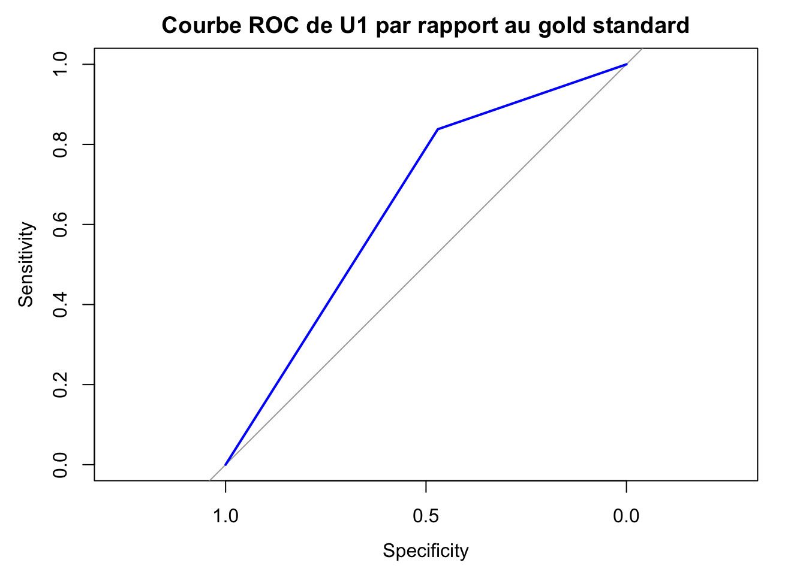
4.2.2 ULNT2a
4.2.2.1 Tableaux récapitulatifs complémentaires
4.2.2.2 Tableau descriptif des résultats des tests
kable(
u2a_descriptive,
caption = "Tableau descriptif des résultats de U2a (évaluateur 1)",
align = "c",
col.names = c("Test", "Positifs n", "Positifs %", "Négatifs n", "Négatifs %", "Manquants n", "Manquants %")
)| Test | Positifs n | Positifs % | Négatifs n | Négatifs % | Manquants n | Manquants % |
|---|---|---|---|---|---|---|
| U2a | 38 | 70.4 | 16 | 29.6 | 0 | 0 |
4.2.2.3 Tableau de contingence avec le gold standard
kable(
u2a_contingency,
caption = "Tableau de contingence de U2a par rapport au gold standard, avec effectifs et pourcentages sur l'ensemble des patients analysés",
align = "c"
)| U2a | G+ | G- | Total |
|---|---|---|---|
| T+ | 29 (53.7%) | 9 (16.7%) | 38 (70.4%) |
| T- | 8 (14.8%) | 8 (14.8%) | 16 (29.6%) |
| Total | 37 (68.5%) | 17 (31.5%) | 54 (100%) |
- T+/T- correspond à Test positif ou négatif, G+/G- correspond à Gold standard positif ou négatif.
4.2.2.4 Tableau des effectifs diagnostiques
kable(
u2a_effectifs,
caption = "Effectifs diagnostiques de U2a par rapport au gold standard",
align = "c"
)| Test | N | VP | FN | FP | VN |
|---|---|---|---|---|---|
| U2a | 54 | 29 | 8 | 9 | 8 |
4.2.2.5 Tableau des performances diagnostiques
kable(
u2a_performance_summary,
caption = "Performances diagnostiques de U2a par rapport au gold standard",
align = "c",
col.names = c("Test", "Se [IC95]", "Sp [IC95]", "VPP [IC95]", "VPN [IC95]", "LR+", "LR-", "Youden", "AUC [IC95]")
) %>%
kable_styling(
latex_options = c("hold_position", "scale_down"),
full_width = FALSE,
font_size = 7
)| Test | Se [IC95] | Sp [IC95] | VPP [IC95] | VPN [IC95] | LR+ | LR- | Youden | AUC [IC95] |
|---|---|---|---|---|---|---|---|---|
| U2a | 0.784 [0.618 ; 0.902] | 0.471 [0.23 ; 0.722] | 0.763 [0.598 ; 0.886] | 0.5 [0.247 ; 0.753] | 1.48 | 0.46 | 0.254 | 0.627 [0.488 ; 0.767] |
Paramètres évalués :
LR = Likehood ratio = Rapport de vraisemblance :
LR+ = 1.48 ; un test positif renforce très peu l’hypothèse diagnostique.
LR- = 0.46 ; un test négatif réduit modérément la probabilité de maladie, sans suffire à l’exclure à lui seul.
Indice de Youden
- Ici,
U2aa un indice de Youden de 0.254 ; cela correspond à une performance diagnostique globale modeste.
- Ici,
AUC :
- Une AUC de 0.627 ; cela correspond à une discrimination faible à modérée.
Test exact de Fisher : la p-value de 0.106 teste l’existence d’une association entre
U2aet le gold standard.- Ici, la p-value n’est pas inférieure à 0,05, ce qui ne permet pas de conclure à une association statistiquement significative entre U2a et le gold standard.
4.2.2.6 Courbe ROC
plot_roc_u2a()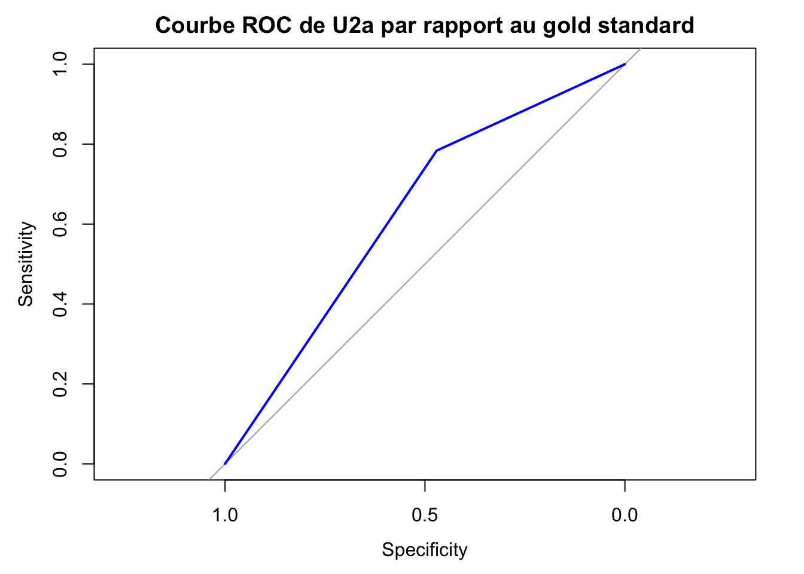
4.2.3 ULNT2b
4.2.3.1 Tableau descriptif des résultats des tests
kable(
u2b_descriptive,
caption = "Tableau descriptif des résultats de U2b (évaluateur 1)",
align = "c",
col.names = c("Test", "Positifs n", "Positifs %", "Négatifs n", "Négatifs %", "Manquants n", "Manquants %")
)| Test | Positifs n | Positifs % | Négatifs n | Négatifs % | Manquants n | Manquants % |
|---|---|---|---|---|---|---|
| U2b | 35 | 64.8 | 19 | 35.2 | 0 | 0 |
4.2.3.2 Tableau de contingence avec le gold standard
kable(
u2b_contingency,
caption = "Tableau de contingence de U2b par rapport au gold standard, avec effectifs et pourcentages sur l'ensemble des patients analysés",
align = "c"
)| U2b | G+ | G- | Total |
|---|---|---|---|
| T+ | 28 (51.9%) | 7 (13%) | 35 (64.8%) |
| T- | 9 (16.7%) | 10 (18.5%) | 19 (35.2%) |
| Total | 37 (68.5%) | 17 (31.5%) | 54 (100%) |
- T+/T- correspond à Test positif ou négatif, G+/G- correspond à Gold standard positif ou négatif.
4.2.3.3 Tableau des effectifs diagnostiques
kable(
u2b_effectifs,
caption = "Effectifs diagnostiques de U2b par rapport au gold standard",
align = "c"
)| Test | N | VP | FN | FP | VN |
|---|---|---|---|---|---|
| U2b | 54 | 28 | 9 | 7 | 10 |
4.2.3.4 Tableau des performances diagnostiques
kable(
u2b_performance_summary,
caption = "Performances diagnostiques de U2b par rapport au gold standard",
align = "c",
col.names = c("Test", "Se [IC95]", "Sp [IC95]", "VPP [IC95]", "VPN [IC95]", "LR+", "LR-", "Youden", "AUC [IC95]")
) %>%
kable_styling(
latex_options = c("hold_position", "scale_down"),
full_width = FALSE,
font_size = 7
)| Test | Se [IC95] | Sp [IC95] | VPP [IC95] | VPN [IC95] | LR+ | LR- | Youden | AUC [IC95] |
|---|---|---|---|---|---|---|---|---|
| U2b | 0.757 [0.588 ; 0.882] | 0.588 [0.329 ; 0.816] | 0.8 [0.631 ; 0.916] | 0.526 [0.289 ; 0.756] | 1.84 | 0.41 | 0.345 | 0.672 [0.533 ; 0.812] |
Paramètres évalués :
LR = Likehood ratio = Rapport de vraisemblance :
LR+ = 1.84 ; un test positif renforce très peu l’hypothèse diagnostique.
LR- = 0.41 ; un test négatif réduit modérément la probabilité de maladie, sans suffire à l’exclure à lui seul.
Indice de Youden
- Ici,
U2ba un indice de Youden de 0.345 ; cela correspond à une performance diagnostique globale modeste.
- Ici,
AUC :
- Une AUC de 0.672 ; cela correspond à une discrimination faible à modérée.
Test exact de Fisher : la p-value de 0.0297 teste l’existence d’une association entre
U2bet le gold standard.- Ici, la p-value est inférieure à 0,05, ce qui suggère une association statistiquement significative entre U2b et le gold standard.
4.2.3.5 Courbe ROC
plot_roc_u2b()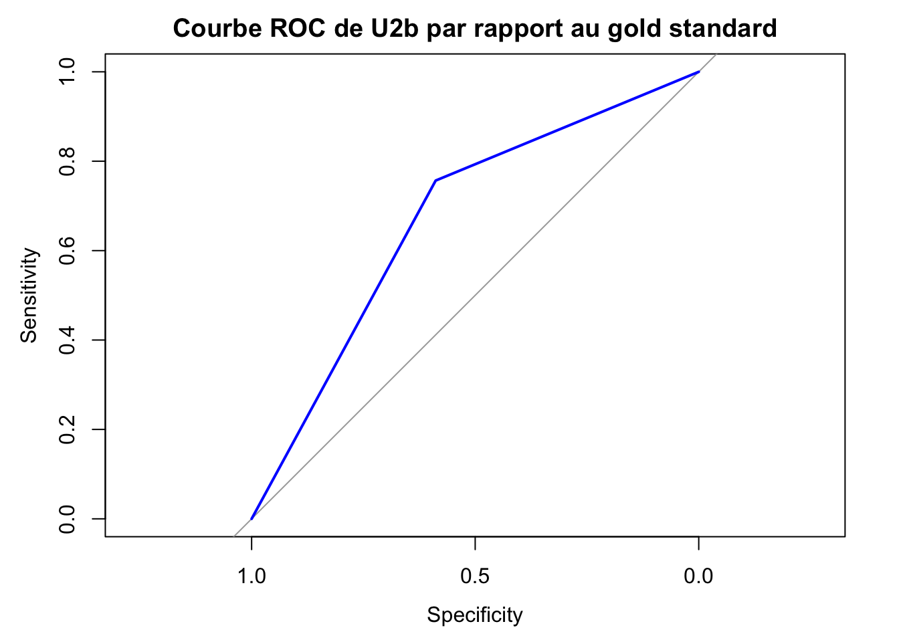
4.2.4 ULNT3
4.2.4.1 Tableau descriptif des résultats des tests
kable(
u3_descriptive,
caption = "Tableau descriptif des résultats de U3 (évaluateur 1)",
align = "c",
col.names = c("Test", "Positifs n", "Positifs %", "Négatifs n", "Négatifs %", "Manquants n", "Manquants %")
)| Test | Positifs n | Positifs % | Négatifs n | Négatifs % | Manquants n | Manquants % |
|---|---|---|---|---|---|---|
| U3 | 21 | 38.9 | 33 | 61.1 | 0 | 0 |
4.2.4.2 Tableau de contingence avec le gold standard
kable(
u3_contingency,
caption = "Tableau de contingence de U3 par rapport au gold standard, avec effectifs et pourcentages sur l'ensemble des patients analysés",
align = "c"
)| U3 | G+ | G- | Total |
|---|---|---|---|
| T+ | 14 (25.9%) | 7 (13%) | 21 (38.9%) |
| T- | 23 (42.6%) | 10 (18.5%) | 33 (61.1%) |
| Total | 37 (68.5%) | 17 (31.5%) | 54 (100%) |
- T+/T- correspond à Test positif ou négatif, G+/G- correspond à Gold standard positif ou négatif.
4.2.4.3 Tableau des effectifs diagnostiques
kable(
u3_effectifs,
caption = "Effectifs diagnostiques de U3 par rapport au gold standard",
align = "c"
)| Test | N | VP | FN | FP | VN |
|---|---|---|---|---|---|
| U3 | 54 | 14 | 23 | 7 | 10 |
4.2.4.4 Tableau des performances diagnostiques
kable(
u3_performance_summary,
caption = "Performances diagnostiques de U3 par rapport au gold standard",
align = "c",
col.names = c("Test", "Se [IC95]", "Sp [IC95]", "VPP [IC95]", "VPN [IC95]", "LR+", "LR-", "Youden", "AUC [IC95]")
) %>%
kable_styling(
latex_options = c("hold_position", "scale_down"),
full_width = FALSE,
font_size = 7
)| Test | Se [IC95] | Sp [IC95] | VPP [IC95] | VPN [IC95] | LR+ | LR- | Youden | AUC [IC95] |
|---|---|---|---|---|---|---|---|---|
| U3 | 0.378 [0.225 ; 0.552] | 0.588 [0.329 ; 0.816] | 0.667 [0.43 ; 0.854] | 0.303 [0.156 ; 0.487] | 0.92 | 1.06 | -0.033 | 0.483 [0.339 ; 0.628] |
Paramètres évalués :
LR = Likehood ratio = Rapport de vraisemblance :
LR+ = 0.92 ; un test positif ne renforce pas l’hypothèse diagnostique et peut même orienter légèrement dans le sens inverse.
LR- = 1.06 ; un test négatif n’aide pas à exclure la maladie et peut même aller légèrement dans le sens inverse.
Indice de Youden
- Ici,
U3a un indice de Youden de -0.033 ; cela traduit un test globalement non informatif dans cet échantillon.
- Ici,
AUC :
- Une AUC de 0.483 ; cela signifie que le test discrimine moins bien que le hasard dans cette cohorte.
Test exact de Fisher : la p-value de 1 teste l’existence d’une association entre
U3et le gold standard.- Ici, la p-value n’est pas inférieure à 0,05, ce qui ne permet pas de conclure à une association statistiquement significative entre U3 et le gold standard.
4.2.4.5 Courbe ROC
plot_roc_u3()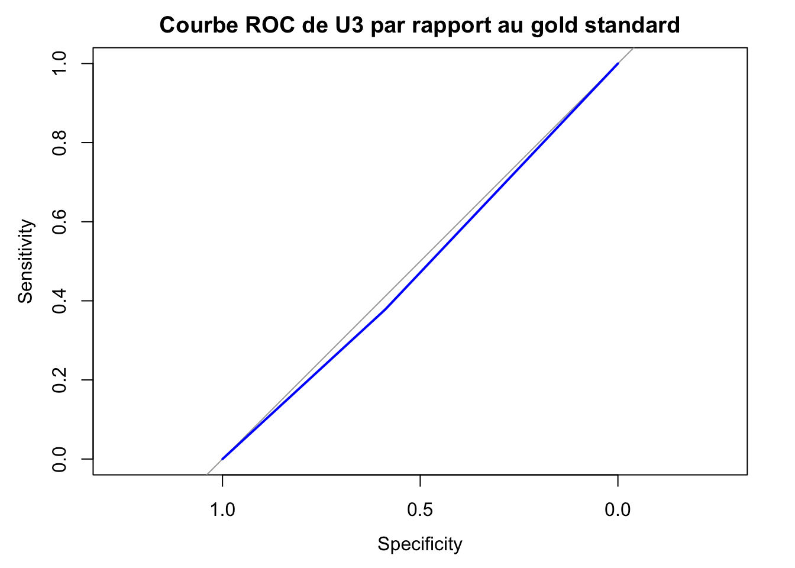
4.3 Résultats globaux résumés
4.3.1 Tableau de contingence global
kable(
contingency_tab,
caption = "Tableau global de contingence des ULNT par rapport au gold standard",
align = "c"
)| Test | VP | FN | FP | VN | N |
|---|---|---|---|---|---|
| U1 | 31 | 6 | 9 | 8 | 54 |
| U2a | 29 | 8 | 9 | 8 | 54 |
| U2b | 28 | 9 | 7 | 10 | 54 |
| U3 | 14 | 23 | 7 | 10 | 54 |
4.3.2 Tableau global des performances diagnostiques
kable(
diag_primary_round,
caption = "Tableau global des performances diagnostiques des ULNT",
align = "c",
col.names = c("Test", "Se [IC95]", "Sp [IC95]", "VPP [IC95]", "VPN [IC95]", "LR+", "LR-", "Youden", "AUC [IC95]")
) %>%
kable_styling(
latex_options = c("hold_position", "scale_down"),
full_width = FALSE,
font_size = 7
)| Test | Se [IC95] | Sp [IC95] | VPP [IC95] | VPN [IC95] | LR+ | LR- | Youden | AUC [IC95] |
|---|---|---|---|---|---|---|---|---|
| U1 | 0.838 [0.68 ; 0.938] | 0.471 [0.23 ; 0.722] | 0.775 [0.615 ; 0.892] | 0.571 [0.289 ; 0.823] | 1.58 | 0.34 | 0.308 | 0.654 [0.518 ; 0.791] |
| U2a | 0.784 [0.618 ; 0.902] | 0.471 [0.23 ; 0.722] | 0.763 [0.598 ; 0.886] | 0.5 [0.247 ; 0.753] | 1.48 | 0.46 | 0.254 | 0.627 [0.488 ; 0.767] |
| U2b | 0.757 [0.588 ; 0.882] | 0.588 [0.329 ; 0.816] | 0.8 [0.631 ; 0.916] | 0.526 [0.289 ; 0.756] | 1.84 | 0.41 | 0.345 | 0.672 [0.533 ; 0.812] |
| U3 | 0.378 [0.225 ; 0.552] | 0.588 [0.329 ; 0.816] | 0.667 [0.43 ; 0.854] | 0.303 [0.156 ; 0.487] | 0.92 | 1.06 | -0.033 | 0.483 [0.339 ; 0.628] |
contingency_plot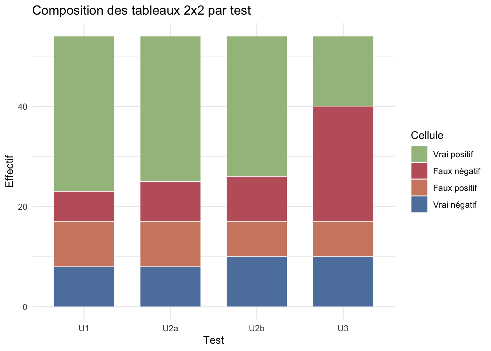
roc_comparison_plot()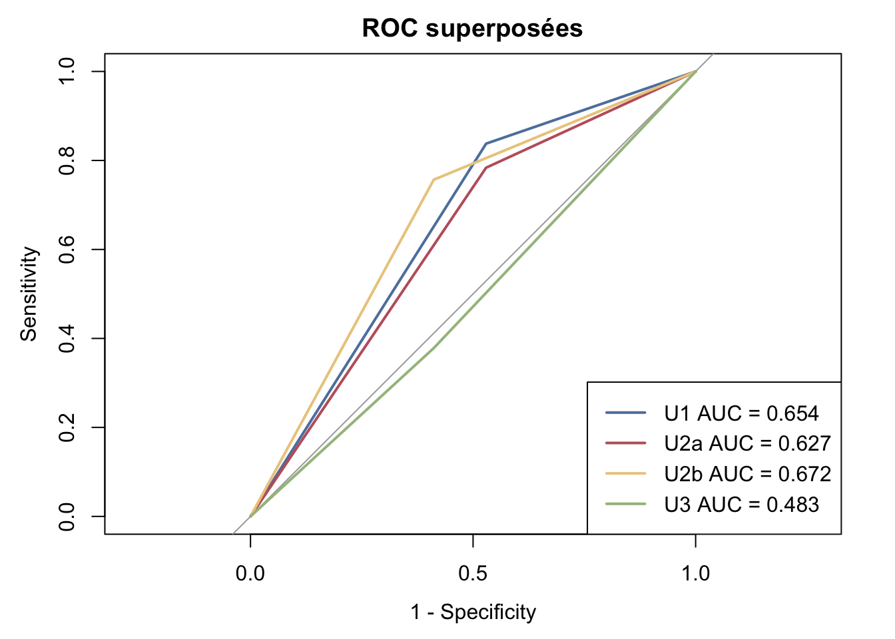
4.4 Résultats par niveaux métamériques
On calcule ici uniquement les taux de positivité par niveau métamérique (c’est à dire la proportion de tests positifs parmi les tests réalisés à chaque niveau, chez les patients ayant un résulta
Section descriptive : données par niveau métamérique sont trop pauvres pour une conclusion statistique valide: - C4, C5 et C7 n’ont qu’un seul dossier chacun. - C8 n’a que 8 dossiers exploitables pour U1.
Ça se voit très bien sur un graphique sur lequel on met l’effectif en ordonnée :
4.4.1 Performance diagnostique par niveau métamérique
Cette section complète les graphes descriptifs précédents en regardant non plus seulement la fréquence de positivité des tests, mais leurs performances diagnostiques par niveau métamérique par rapport au gold standard. Vu les effectifs très faibles à plusieurs niveaux, cette lecture doit rester strictement exploratoire.
kable(
diagnostic_by_level_round,
caption = "Performances diagnostiques exploratoires des ULNT selon le niveau métamérique",
align = "c"
)| Niveau | Test | N | G_pos | G_neg | Se | Sp | VPP | VPN | LR+ | LR- | Youden | AUC | p Fisher |
|---|---|---|---|---|---|---|---|---|---|---|---|---|---|
| C4 | U1 | 1 | 1 | 0 | 0.0 | NA | NA | 0.000 | NA | NA | NA | NA | NA |
| C5 | U1 | 1 | 0 | 1 | NA | 1.000 | NA | 1.000 | NA | NA | NA | NA | NA |
| C6 | U1 | 13 | 10 | 3 | 0.9 | 0.000 | 0.750 | 0.000 | 0.9 | NA | -0.100 | 0.450 | 1.000 |
| C7 | U1 | 1 | 0 | 1 | NA | 0.000 | 0.000 | NA | NA | NA | NA | NA | NA |
| C8 | U1 | 8 | 5 | 3 | 0.8 | 0.667 | 0.800 | 0.667 | 2.4 | 0.3 | 0.467 | 0.733 | 0.464 |
| C4 | U2a | 1 | 1 | 0 | 0.0 | NA | NA | 0.000 | NA | NA | NA | NA | NA |
| C5 | U2a | 1 | 0 | 1 | NA | 1.000 | NA | 1.000 | NA | NA | NA | NA | NA |
| C6 | U2a | 13 | 10 | 3 | 0.8 | 0.000 | 0.727 | 0.000 | 0.8 | NA | -0.200 | 0.400 | 1.000 |
| C7 | U2a | 1 | 0 | 1 | NA | 0.000 | 0.000 | NA | NA | NA | NA | NA | NA |
| C8 | U2a | 8 | 5 | 3 | 0.4 | 0.667 | 0.667 | 0.400 | 1.2 | 0.9 | 0.067 | 0.533 | 1.000 |
| C4 | U2b | 1 | 1 | 0 | 0.0 | NA | NA | 0.000 | NA | NA | NA | NA | NA |
| C5 | U2b | 1 | 0 | 1 | NA | 1.000 | NA | 1.000 | NA | NA | NA | NA | NA |
| C6 | U2b | 13 | 10 | 3 | 0.6 | 0.000 | 0.667 | 0.000 | 0.6 | NA | -0.400 | 0.300 | 0.497 |
| C7 | U2b | 1 | 0 | 1 | NA | 0.000 | 0.000 | NA | NA | NA | NA | NA | NA |
| C8 | U2b | 8 | 5 | 3 | 0.6 | 0.667 | 0.750 | 0.500 | 1.8 | 0.6 | 0.267 | 0.633 | 1.000 |
| C4 | U3 | 1 | 1 | 0 | 0.0 | NA | NA | 0.000 | NA | NA | NA | NA | NA |
| C5 | U3 | 1 | 0 | 1 | NA | 1.000 | NA | 1.000 | NA | NA | NA | NA | NA |
| C6 | U3 | 13 | 10 | 3 | 0.2 | 0.333 | 0.500 | 0.111 | 0.3 | 2.4 | -0.467 | 0.733 | 0.203 |
| C7 | U3 | 1 | 0 | 1 | NA | 0.000 | 0.000 | NA | NA | NA | NA | NA | NA |
| C8 | U3 | 8 | 5 | 3 | 0.0 | 0.667 | 0.000 | 0.286 | 0.0 | 1.5 | -0.333 | 0.333 | 0.375 |
diagnostic_by_level_heatmap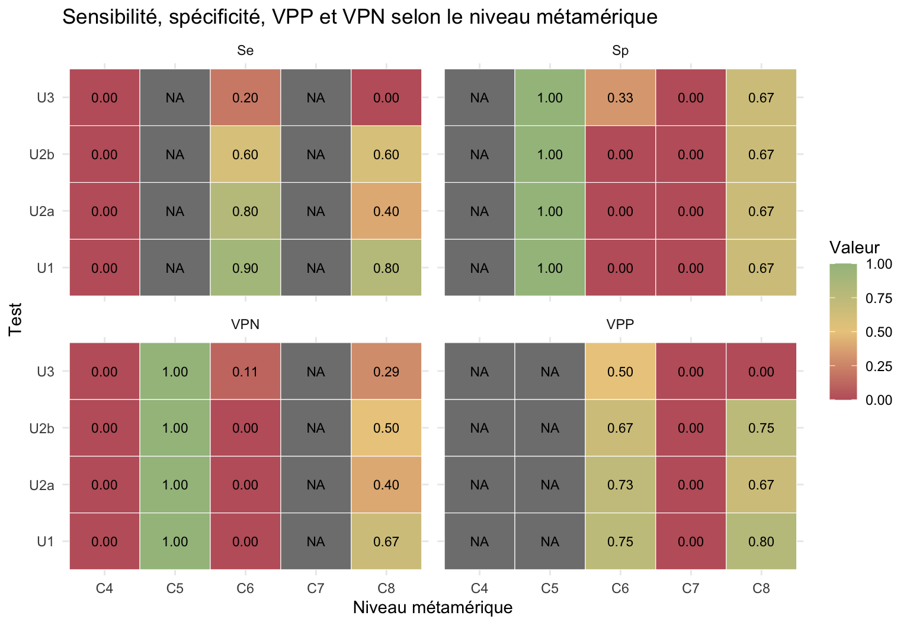
Lecture pratique : ici, le bon dénominateur n’est plus “tous les tests positifs observés à un niveau”, mais bien le gold standard à ce niveau. Ainsi, la sensibilité correspond à la proportion de patients G+ correctement détectés par le test, et la spécificité à la proportion de patients G- correctement classés négatifs. Cela répond mieux à la question de la performance diagnostique selon le niveau métamérique. En revanche, avec plusieurs niveaux n’ayant qu’1 à 13 dossiers seulement, ces estimations sont très instables et ne doivent pas être surinterprétées.
4.5 Reproductibilité inter-évaluateurs
kable(
kappa_round,
format = if (knitr::is_latex_output()) {
"latex"
} else if (knitr::is_html_output()) {
"html"
} else {
"pipe"
},
booktabs = TRUE,
align = "c",
caption = "Inter-observer agreement for each ultrasound test"
)| Test | N | Accord | Kappa | IC95% bas | IC95% haut | Interpretation |
|---|---|---|---|---|---|---|
| U1 | 52 | 0.865 | 0.611 | 0.353 | 0.869 | substantielle |
| U2a | 52 | 0.808 | 0.532 | 0.279 | 0.786 | moderee |
| U2b | 52 | 0.788 | 0.512 | 0.261 | 0.763 | moderee |
| U3 | 52 | 0.808 | 0.607 | 0.389 | 0.825 | substantielle |
kappa_plot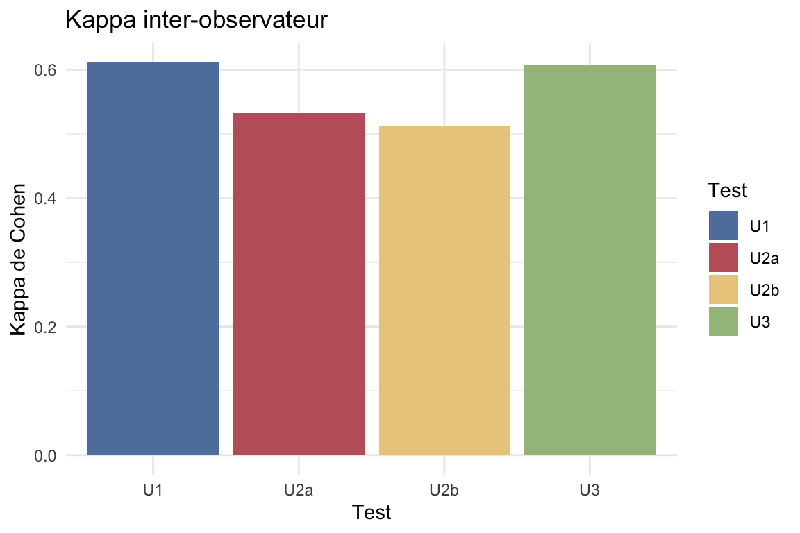
Le Kappa de Cohen correspond à la concordance corrigée, c’est à dire le pourcentage d’accord entre les évaluateurs corrigé par le taux d’accord attendu par hasard.
Interprétation selon tableau de Landis & Koch (1977) : - < 0 : pas d’accord - 0.00–0.20 : accord faible - 0.21–0.40 : accord passable - 0.41–0.60 : accord modéré - 0.61–0.80 : accord substantiel - 0.81–1.00 : accord presque parfait
5 Résultats des tests en les combinant
2 façons de combiner les tests :
Soit sans les départager : calcul de la probabilité de NCB en fonction du nombre de tests positifs (de 0 à 4)
Soit en les départageant : calcul de la probabilité de NCB en fonction du test le plus distal positif (U1, U2a, U2b ou U3)
5.1 Probabilité de NCB en fonction du nombre de tests positifs
exact_score_perf_table %>%
kable(
format = if (knitr::is_latex_output()) {
"latex"
} else if (knitr::is_html_output()) {
"html"
} else {
"pipe"
},
booktabs = TRUE,
align = "c",
digits = 3,
caption = "Probabilité observée de NCB selon le nombre exact de tests positifs",
col.names = c(
"Nombre de tests positifs",
"Effectif (N)",
"Nombre de NCB",
"Probabilité de NCB [IC95%]"
)
)| Nombre de tests positifs | Effectif (N) | Nombre de NCB | Probabilité de NCB [IC95%] |
|---|---|---|---|
| 0 | 9 | 2 | 0.222 [0.028; 0.6] |
| 1 | 4 | 3 | 0.75 [0.194; 0.994] |
| 2 | 8 | 7 | 0.875 [0.473; 0.997] |
| 3 | 18 | 15 | 0.833 [0.586; 0.964] |
| 4 | 15 | 10 | 0.667 [0.384; 0.882] |
score_probability_plot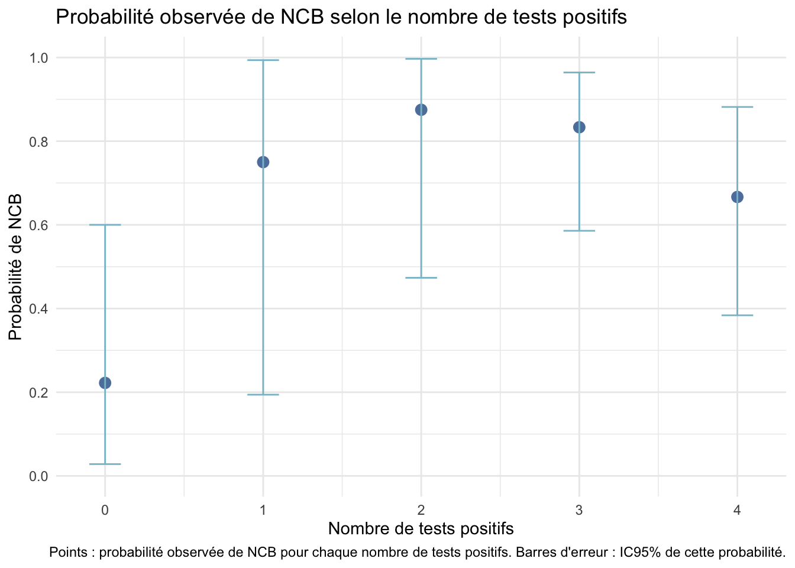
5.2 Score de positivité : performances diagnostiques selon les seuils de score
L’objectif ici est de calculer les performances diagnostiques (sensibilité, spécificité, LR+, LR-, DOR) pour différents seuils de score (>=1 positif, >=2 positifs, >=3 positifs, >=4 positifs). Cela permet d’évaluer comment la performance diagnostique évolue en fonction du nombre de tests positifs.
En gros, ça servirait à dire “considérer le diagnostic positif de NCB si au moins 2 tests sont positifs” a eu une sensibilité de X% et une spécificité de Y% dans cet échantillon, etc.
DOR = différence d’Odds Ratio entre les patients positifs et négatifs : (VP/VN) / (FP/FN) = (VPVN) / (FPFN). Plus le DOR est élevé, meilleure est la performance diagnostique du test.
score_summary_table %>%
kable(
format = if (knitr::is_latex_output()) {
"latex"
} else if (knitr::is_html_output()) {
"html"
} else {
"pipe"
},
booktabs = TRUE,
align = "c",
digits = 3,
caption = "Performances diagnostiques selon le seuil du score"
)| Seuil | Se | Sp | LR+ | LR- | DOR |
|---|---|---|---|---|---|
| >=1 positif | 0.946 | 0.412 | 1.608 | 0.131 | 12.250 |
| >=2 positifs | 0.865 | 0.471 | 1.634 | 0.287 | 5.689 |
| >=3 positifs | 0.676 | 0.529 | 1.436 | 0.613 | 2.344 |
| >=4 positifs | 0.270 | 0.706 | 0.919 | 1.034 | 0.889 |